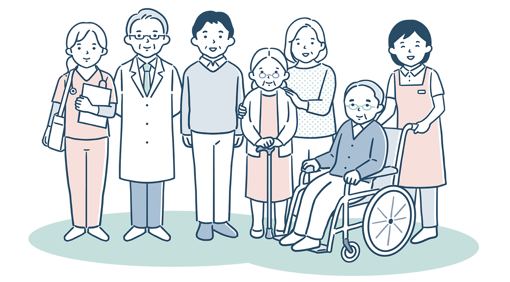

「もんてくらい」で
一緒に働こう
住宅型有料老人ホーム「もんてくらい」では、一緒に働いていただける社員を募集しています。
正社員
- 雇用形態
- 正社員(日勤･夜勤含む常勤)
- 仕事内容
- 介護付有料老人ホームの看護業務全般
- (吸引、投薬管理、経管栄養、バイタルチェック、生活介助 等)
- 応募資格
- 正看護師、准看護師
- 給与
-
- 正看護師
-
- 月給
- 310,000円
- 夜勤手当
- 10,000円/回 (月4~5回程度)
- 永続勤続手当
- 3年以上 8,000円/月
- 5年以上 16,000円/月
- モデル年収(5年勤続後)
- 5,197,000円
- 準看護師
-
- 月給
- 260,000円
- 夜勤手当
- 10,000円/回 (月4~5回程度)
- 永続勤続手当
- 3年以上 8,000円/月
- 5年以上 16,000円/月
- モデル年収(5年勤続後)
- 4,492,000円
- ※いずれも、日勤のみの日勤常勤も募集しています。
- 賞与
- 年2回(昨年度実績 3.5ヶ月)
- 勤務時間
- 日勤 8:30~17:30
- 夜勤 17:00~翌9:30
- 休日
- 月9休(シフト制)、夏季、冬季休暇
- 年間休日112日
- 待遇
- ･社会保険(厚生年金･健康保険･雇用保険･労災保険)
- ･年次有給休暇
- ･交通費実費支給(上限 50,000円/月)
- ･制服貸与
- ･社員親族入居優遇制度
- 勤務地
- 〒492-8215 愛知県稲沢市大塚北 2-99
パート社員(日勤勤務)
- 雇用形態
- パート社員(日勤勤務)
- 仕事内容
- 介護付有料老人ホームの看護業務全般
- (吸引、投薬管理、経管栄養、バイタルチェック、生活介助 等)
- 応募資格
- 正看護師、准看護師
- 給与
-
- 正看護師
-
- 時給
- 1,800円
- 永続勤続手当
- 3年以上 2,000円/月
- 5年以上 3,000円/月
- 準看護師
-
- 時給
- 1,600円
- 永続勤続手当
- 3年以上 2,000円/月
- 5年以上 3,000円/月
- 勤務日
- 週4日程度~応相談
- 勤務時間
- 日勤 8:30~17:30
- 休日
- 勤務日以外
- 待遇
- ･社会保険(厚生年金･健康保険･雇用保険･労災保険)
- ※労働条件による
- ･年次有給休暇
- ･交通費実費支給(上限 50,000円/月)
- ･制服貸与
- 勤務地
- 〒492-8215 愛知県稲沢市大塚北 2-99
パート社員(夜勤専従)
- 雇用形態
- パート社員(夜勤専従)
- 仕事内容
- 介護付有料老人ホームの看護業務全般
- (吸引、投薬管理、経管栄養、バイタルチェック、生活介助 等)
- 応募資格
- 正看護師、准看護師
- 給与
-
- 夜勤1回
- 30,000円
- 永年勤続手当
- 3年以上 2,000円/月
5年以上 3,000円/月
- 勤務日
- 月8回程度勤務できる方歓迎
- 勤務回数応相談
- 勤務時間
- 夜勤 17:00~翌9:00
- 休日
- 勤務日以外
- 待遇
- ･社会保険(厚生年金･健康保険･雇用保険･労災保険)
- ※労働条件による
- ･年次有給休暇
- ･交通費実費支給(上限 50,000円/月)
- ･制服貸与
- 勤務地
- 〒492-8215 愛知県稲沢市大塚北 2-99
応募方法
以下のいずれかの方法でご応募ください。
- メールでの応募→こちら
- 応募書類(履歴書、免許証、資格証のコピー)を送付
-
- 送付先住所
- 〒492-8215
- 愛知県稲沢市大塚北 2-99
お問い合せ
- 電話相談はこちら
- 0587-24-9064

- メール相談はこちら
- shibawanko0202@gmail.com(仮)